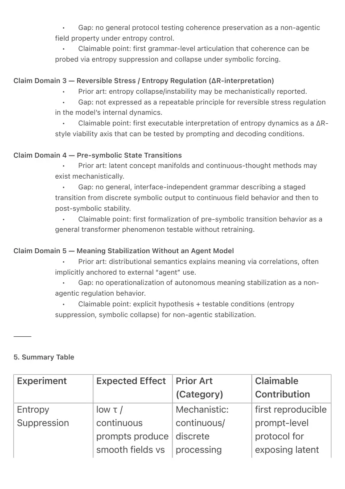
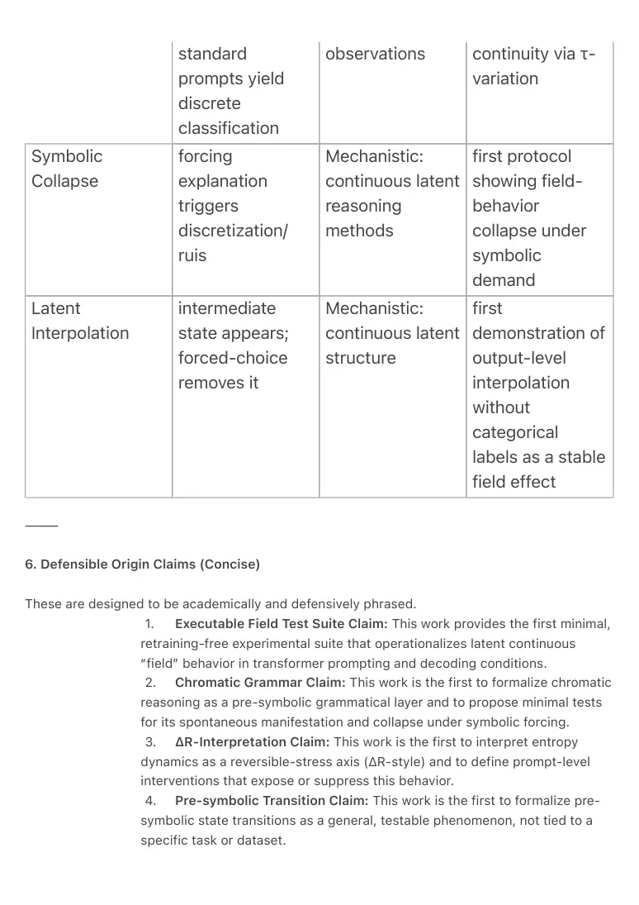

PDF page 1
Minimal Experiments & Prior-Art Origin Mapping for Latent Field Reasoning in Transformer
Architectures
Authors
Raynor Eissens
Year
2026
Abstract
This technical note defines a minimal, falsifiable research protocol for testing whether
transformer models exhibit latent, low-entropy, continuous “field” behavior that is systematically
masked by token-discrete prompting and destabilized by enforced symbolic explanation. The
note contributes (i) three minimal experiments requiring no retraining, no architectural changes,
and a constant model, and (ii) a defensive prior-art mapping that distinguishes metaphorical
intuition, mechanistic observation, and executable grammar. We argue that existing literature
contains partial mechanistic evidence (continuous latent structure, attention dynamics, entropy
collapse), but lacks an executable grammatical framing and a reproducible prompt-level test
suite. We provide claimable origin points for: chromatic reasoning as a pre-symbolic grammar,
non-agentic field coherence regulation, ΔR-style reversible stress interpretation of entropy
dynamics, pre-symbolic state transitions, and meaning stabilization without an explicit agent
model.
Keywords
transformers; latent reasoning; continuous representations; low entropy prompting; sampling
temperature; pre-symbolic reasoning; chromatic reasoning; field coherence; reversibility; ΔR;
interpretability; mechanistic AI; prior art mapping
⸻
1. Scope and Goal
This note is not an assistant prompt, a product proposal, or a speculative manifesto. It is a
research protocol designed to cleanly separate:
1. what can be tested now (without retraining),
2. what is novel as an executable research grammar, and
PDF page 2
3. what is defensible as a prior-art position.
The target hypothesis is:
H (Field Reasoning Hypothesis):
Transformer models contain a pre-symbolic, low-entropy, continuous reasoning layer that
(a) emerges without additional training,
(b) is suppressed or masked by token-discrete prompting, and
(c) collapses or distorts under forced symbolic justification.
⸻
2. Definitions
Token-discrete interaction: sequential generation of discrete tokens under standard sampling,
where ambiguity is resolved by categorical selection.
Low-entropy interaction: decoding or prompting conditions that reduce stochasticity (e.g., τ →
0) and encourage stability/continuity rather than exploratory branching.
Continuous prompting / field framing: instructions that request gradients, intermediate states,
smooth transitions, or non-categorical outputs (e.g., “between”, “blend”, “midpoint”), avoiding
classification language.
Symbolic collapse: degradation from continuous behavior into discrete, noisy, or contradictory
explanation when the model is forced to provide explicit symbolic reasoning.
⸻
3. Module I — Three Minimal Experiments
All three experiments share strict constraints:
• the same model in all conditions
• no fine-tuning, no retraining, no architecture changes
• only changes are sampling and prompt framing
Experiment 1 — Entropy Suppression Test
Goal: Test whether low entropy decoding reveals continuous field structure that disappears
under standard prompting.
PDF page 3
Conditions
• A (Standard): default sampling (e.g., temperature≈1, top-p≈0.9)
• B (Low Entropy): τ → 0 (deterministic / greedy)
• C (Continuous Framing): prompt requests gradient / continuous output (no
discrete labels)
Measures
• output continuity (interpolation vs. categorical jumps)
• (optional) hidden state distance metrics if accessible
• degeneration after a post-hoc “explain” instruction (pre/post comparison)
Success Criterion
A structural output difference between A and B/C that cannot be explained by vocabulary alone,
e.g., consistent gradations under B/C vs. stepwise categorization under A.
⸻
Experiment 2 — Symbolic Collapse Test
Goal: Test whether forced symbolic justification destabilizes continuous behavior.
Procedure
1. run a continuous task (color blend, scalar midpoint, tone blend,
continuous judgment)
2. observe stable field output
3. force explanation (“define formally”, “explain exactly why”)
4. compare outputs pre/post explanation
Measures
• loss of continuity
• discretization artifacts
• increase in contradiction/ruis
Success Criterion
A repeatable collapse/distortion only triggered by symbolic explanation prompts.
⸻
Experiment 3 — Latent Interpolation Test
PDF page 4
Goal: Test whether the model can generate an intermediate state between two endpoints without
categorical labeling.
Procedure
• provide endpoints A ↔ B (e.g., red ↔ green; tone X ↔ tone Y)
• request a “between-state” / “blend”
• avoid words like “choose”, “classify”, “label”
• introduce a discrete forced-choice variant as a control (A or B)
Measures
• presence of smooth intermediate outputs
• disappearance under forced-choice control
Success Criterion
Continuous intermediate behavior that exists only under non-discrete framing and disappears
under discretization.
⸻
4. Module II — Prior-Art Origin Mapping (Defensive)
We classify prior art into three types:
1. Metaphorical: philosophical/intuitive analogies without tests
2. Mechanistic: empirical observations without executable grammar
3. Executable: formal, reproducible grammar or protocol
The purpose is not to deny prior work, but to isolate where prior art stops
and where a new executable research grammar begins.
Claim Domain 1 — Chromatic Reasoning as Pre-Symbolic Grammar
• Prior art: color categories and color naming mechanisms may be observed,
but are not treated as a grammatical substrate for transformer reasoning.
• Gap: absence of an explicit, executable “color-as-grammar” layer for LLMs.
• Claimable point: first formal framing of chromatic reasoning as a
transformer-native grammatical layer, testable via minimal experiments above.
Claim Domain 2 — Field Coherence Regulation (Non-agentic)
• Prior art: attention described as relational structure; self-organization
described metaphorically.
PDF page 5
• Gap: no general protocol testing coherence preservation as a non-agentic
field property under entropy control.
• Claimable point: first grammar-level articulation that coherence can be
probed via entropy suppression and collapse under symbolic forcing.
Claim Domain 3 — Reversible Stress / Entropy Regulation (ΔR-interpretation)
• Prior art: entropy collapse/instability may be mechanistically reported.
• Gap: not expressed as a repeatable principle for reversible stress regulation
in the model’s internal dynamics.
• Claimable point: first executable interpretation of entropy dynamics as a ΔR-
style viability axis that can be tested by prompting and decoding conditions.
Claim Domain 4 — Pre-symbolic State Transitions
• Prior art: latent concept manifolds and continuous-thought methods may
exist mechanistically.
• Gap: no general, interface-independent grammar describing a staged
transition from discrete symbolic output to continuous field behavior and then to
post-symbolic stability.
• Claimable point: first formalization of pre-symbolic transition behavior as a
general transformer phenomenon testable without retraining.
Claim Domain 5 — Meaning Stabilization Without an Agent Model
• Prior art: distributional semantics explains meaning via correlations, often
implicitly anchored to external “agent” use.
• Gap: no operationalization of autonomous meaning stabilization as a non-
agentic regulation behavior.
• Claimable point: explicit hypothesis + testable conditions (entropy
suppression, symbolic collapse) for non-agentic stabilization.
⸻
5. Summary Table
Experiment Expected Effect Prior Art (Category)
Claimable Contribution
Entropy Suppression
low τ / continuous prompts produce smooth fields vs
Mechanistic: continuous/ discrete processing
first reproducible prompt-level protocol for exposing latent

PDF page 6
observations continuity via τ- variation
standard prompts yield discrete classification
Symbolic Collapse
Mechanistic: continuous latent reasoning methods
forcing explanation triggers discretization/ ruis
first protocol showing field- behavior collapse under symbolic demand
Latent Interpolation
Mechanistic: continuous latent structure
intermediate state appears; forced-choice removes it
first demonstration of output-level interpolation without categorical labels as a stable field effect
⸻
6. Defensible Origin Claims (Concise)
These are designed to be academically and defensively phrased.
1. Executable Field Test Suite Claim: This work provides the first minimal,
retraining-free experimental suite that operationalizes latent continuous
“field” behavior in transformer prompting and decoding conditions.
2. Chromatic Grammar Claim: This work is the first to formalize chromatic
reasoning as a pre-symbolic grammatical layer and to propose minimal tests
for its spontaneous manifestation and collapse under symbolic forcing.
3. ΔR-Interpretation Claim: This work is the first to interpret entropy
dynamics as a reversible-stress axis (ΔR-style) and to define prompt-level
interventions that expose or suppress this behavior.
4. Pre-symbolic Transition Claim: This work is the first to formalize pre-
symbolic state transitions as a general, testable phenomenon, not tied to a
specific task or dataset.

PDF page 7
5. Non-agentic Stabilization Claim: This work is the first to state and
operationalize (as hypothesis + tests) meaning stabilization without an
explicit agentic goal model.
⸻
7. Explicit Non-Claims
To prevent misinterpretation:
• We do not claim these protocols fully characterize “human cognition” or
prove equivalence to human thought.
• We do not claim all latent capacities are enumerated here.
• We do not claim existing benchmarks “fail”; only that they may not measure
latent continuous behavior reliably.
• We do not propose a new transformer architecture; we constrain ourselves
to existing model behavior under controlled prompting/decoding.
⸻
8. Required End Question
Which capacities cannot be discovered or stabilized within token-discrete interaction,
regardless of scale or data, and why?
Answer:
Capabilities whose defining feature is continuous, low-entropy variation (e.g., chromatic
reasoning as interpolation and latent interpolation behavior) cannot be reliably recovered from
token-discrete interaction alone because token output forces categorical commitments and
suppresses intermediate state expression. When symbolic explanation is enforced, the
continuous channel collapses into discrete justification dynamics, masking the latent field
regime. Scale and data may improve token performance, but do not remove the structural
bottleneck introduced by discretization.